- An implementation of the Grammar of Graphics by Leland Wilkinson
- Grammar of graphics represents and abstraction of graphics ideas/objects
- Think “verb”, “noun”, “adjective” for graphics
- Allows for a “theory” of graphics on which to build new graphics and graphics objects
The ggplot2 Plotting System - Part 2
Roger D. Peng, Associate Professor of Biostatistics
Johns Hopkins Bloomberg School of Public Health
What is ggplot2?
Basic Components of a ggplot2 Plot
- A data frame
- aesthetic mappings: how data are mapped to color, size
- geoms: geometric objects like points, lines, shapes.
- facets: for conditional plots.
- stats: statistical transformations like binning, quantiles, smoothing.
- scales: what scale an aesthetic map uses (example: male = red, female = blue).
- coordinate system
Building Plots with ggplot2
- When building plots in ggplot2 (rather than using qplot) the “artist’s palette” model may be the closest analogy
- Plots are built up in layers
- Plot the data
- Overlay a summary
- Metadata and annotation
Example: BMI, PM\(_{2.5}\), Asthma
- Mouse Allergen and Asthma Cohort Study
- Baltimore children (age 5-17)
- Persistent asthma, exacerbation in past year
- Does BMI (normal vs. overweight) modify the relationship between PM\(_{2.5}\) and asthma symptoms?
Basic Plot
library(ggplot2)
qplot(logpm25, NocturnalSympt, data = maacs, facets = . ~ bmicat,
geom = c("point", "smooth"), method = "lm")

Building Up in Layers
head(maacs)
logpm25 bmicat NocturnalSympt logno2_new
1 1.5362 normal weight 1 1.299
2 1.5905 normal weight 0 1.295
3 1.5218 normal weight 0 1.304
4 1.4323 normal weight 0 NA
5 1.2762 overweight 8 1.108
6 0.7139 overweight 0 0.837
g <- ggplot(maacs, aes(logpm25, NocturnalSympt))
summary(g)
data: logpm25, bmicat, NocturnalSympt, logno2_new [554x4]
mapping: x = logpm25, y = NocturnalSympt
faceting: facet_null()
No Plot Yet!
g <- ggplot(maacs, aes(logpm25, NocturnalSympt))
print(g)
Error: No layers in plot
First Plot with Point Layer
g <- ggplot(maacs, aes(logpm25, NocturnalSympt))
g + geom_point()
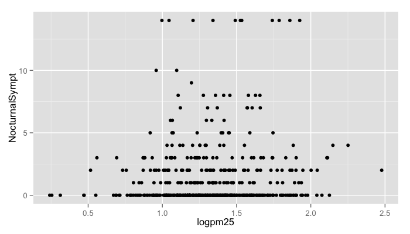
Adding More Layers: Smooth
g + geom_point() + geom_smooth()
g + geom_point() + geom_smooth(method = "lm")
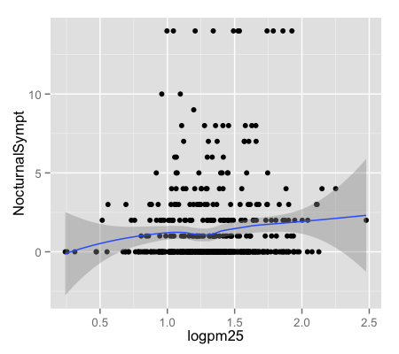
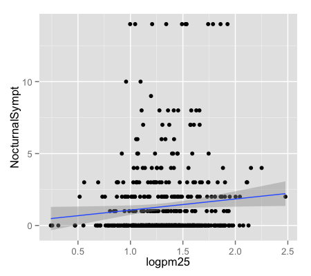
Adding More Layers: Facets
g + geom_point() + facet_grid(. ~ bmicat) + geom_smooth(method = "lm")
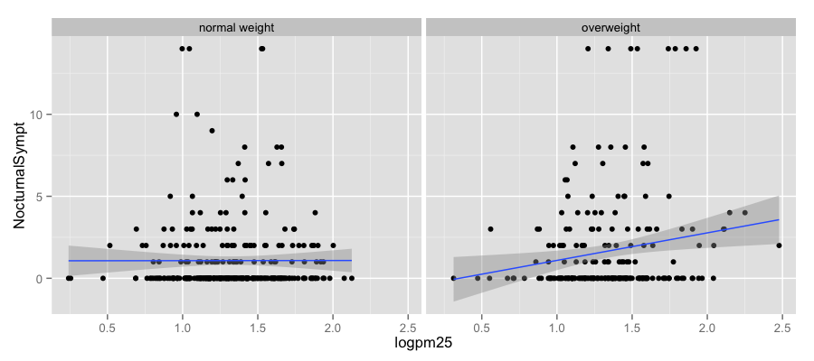
Annotation
- Labels:
xlab(),ylab(),labs(),ggtitle() - Each of the “geom” functions has options to modify
- For things that only make sense globally, use
theme()- Example:
theme(legend.position = "none")
- Example:
- Two standard appearance themes are included
theme_gray(): The default theme (gray background)theme_bw(): More stark/plain
Modifying Aesthetics
g + geom_point(color = "steelblue", size = 4, alpha = 1/2)
g + geom_point(aes(color = bmicat), size = 4, alpha = 1/2)
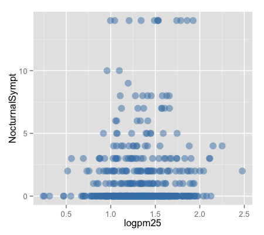
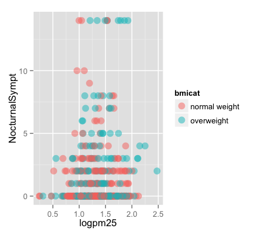
Modifying Labels
g + geom_point(aes(color = bmicat)) + labs(title = "MAACS Cohort") +
labs(x = expression("log " * PM[2.5]), y = "Nocturnal Symptoms")
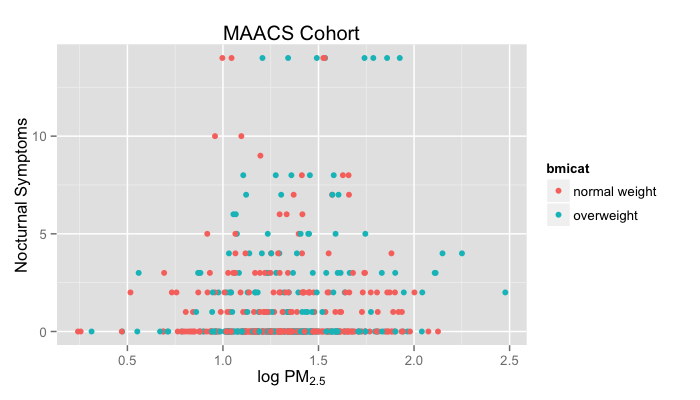
Customizing the Smooth
g + geom_point(aes(color = bmicat), size = 2, alpha = 1/2) +
geom_smooth(size = 4, linetype = 3, method = "lm", se = FALSE)
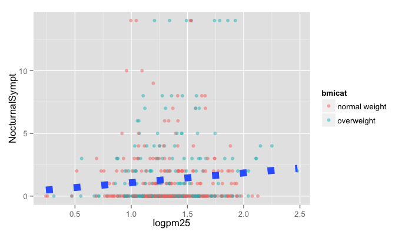
Changing the Theme
g + geom_point(aes(color = bmicat)) + theme_bw(base_family = "Times")
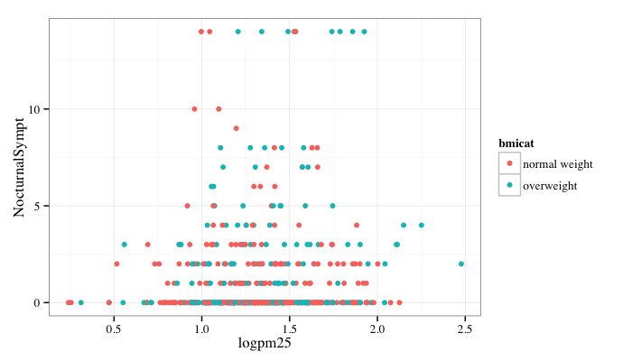
A Note about Axis Limits
testdat <- data.frame(x = 1:100, y = rnorm(100))
testdat[50,2] <- 100 ## Outlier!
plot(testdat$x, testdat$y, type = "l", ylim = c(-3,3))
g <- ggplot(testdat, aes(x = x, y = y))
g + geom_line()
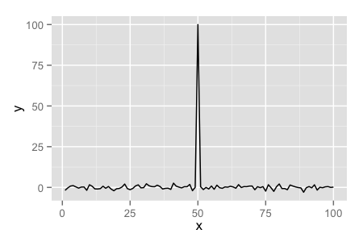
Axis Limits
g + geom_line() + ylim(-3, 3)
g + geom_line() + coord_cartesian(ylim = c(-3, 3))
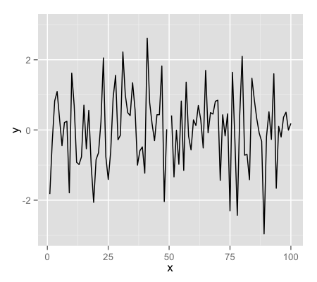
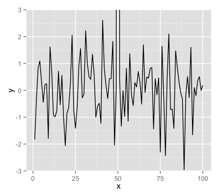
More Complex Example
- How does the relationship between PM\(_{2.5}\) and nocturnal symptoms vary by BMI and NO\(_2\)?
- Unlike our previous BMI variable, NO\(_2\) is continuous
- We need to make NO\(_2\) categorical so we can condition on it in the plotting
- Use the
cut()function for this
Making NO\(_2\) Tertiles
## Calculate the tertiles of the data
cutpoints <- quantile(maacs$logno2_new, seq(0, 1, length = 4), na.rm = TRUE)
## Cut the data at the tertiles and create a new factor variable
maacs$no2tert <- cut(maacs$logno2_new, cutpoints)
## See the levels of the newly created factor variable
levels(maacs$no2tert)
[1] "(0.378,1.2]" "(1.2,1.42]" "(1.42,2.55]"
Final Plot
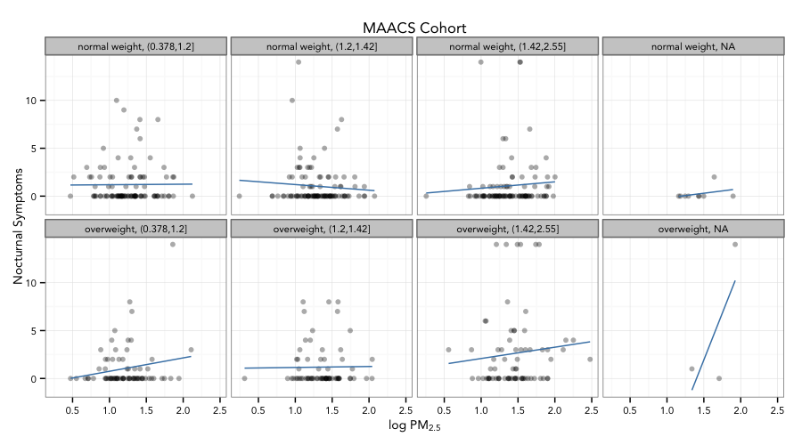
Code for Final Plot
## Setup ggplot with data frame
g <- ggplot(maacs, aes(logpm25, NocturnalSympt))
## Add layers
g + geom_point(alpha = 1/3) +
facet_wrap(bmicat ~ no2tert, nrow = 2, ncol = 4) +
geom_smooth(method="lm", se=FALSE, col="steelblue") +
theme_bw(base_family = "Avenir", base_size = 10) +
labs(x = expression("log " * PM[2.5])) +
labs(y = "Nocturnal Symptoms") +
labs(title = "MAACS Cohort")
Summary
- ggplot2 is very powerful and flexible if you learn the “grammar” and the various elements that can be tuned/modified
- Many more types of plots can be made; explore and mess around with the package (references mentioned in Part 1 are useful)